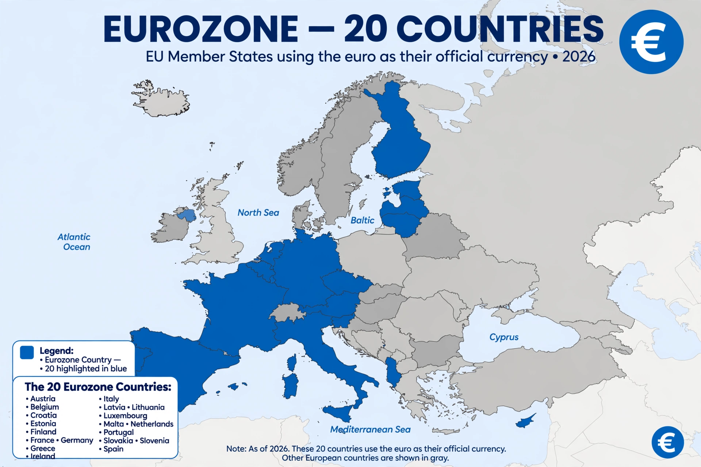

Eurozone

| Eurozone | |
|---|---|
| Type | Monetary union |
| Currency | Euro (€, EUR) |
| Members | 20 EU member states |
| Established | 1 January 1999 |
| Central bank | European Central Bank (Frankfurt) |
| Population | c. 350 million |
The Eurozone, officially the euro area, is a currency union of 20 member states of the European Union that have adopted the euro (€) as their primary and sole legal tender. Its monetary policy is set by the European Central Bank (ECB) in Frankfurt, working with the national central banks of member states through the Eurosystem.
The euro was introduced as an accounting currency on 1 January 1999, replacing the European Currency Unit at par, and euro banknotes and coins entered circulation on 1 January 2002. The original eleven members included Germany, France, Italy, Spain, the Netherlands, Belgium, Luxembourg, Austria, Finland, Ireland, and Portugal; Greece joined in 2001. Later entrants included Slovenia (2007), Cyprus and Malta (2008), Slovakia (2009), Estonia (2011), Latvia (2014), Lithuania (2015), and Croatia (2023).
History
The Maastricht Treaty (1992) laid down the convergence criteria for joining: limits on inflation, government deficits (3 percent of GDP) and debt (60 percent of GDP), exchange-rate stability, and long-term interest rates. The euro area sovereign debt crisis that began in 2009 exposed weaknesses in the union's fiscal framework and led to bailout programmes for Greece, Ireland, Portugal, Spain, and Cyprus, the creation of the European Stability Mechanism, and the beginnings of a banking union.
Governance
Finance ministers of the euro area meet as the Eurogroup. Fiscal policy remains national but is coordinated under the Stability and Growth Pact. The ECB's Governing Council — its Executive Board plus the governors of the 20 national central banks — sets interest rates for the whole area.
Enlargement
All EU member states except Denmark, which has a formal opt-out, are obliged to adopt the euro once they meet the convergence criteria. Bulgaria has been a leading candidate for adoption following its entry into ERM II in 2020.